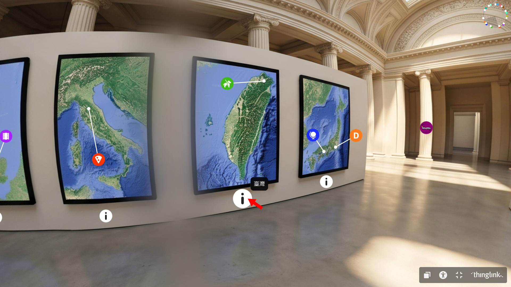
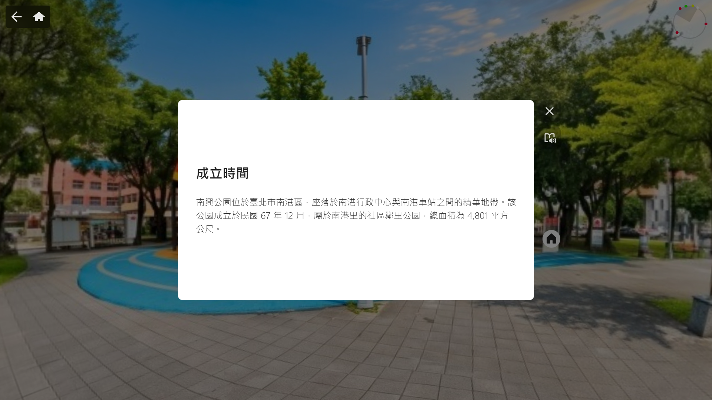
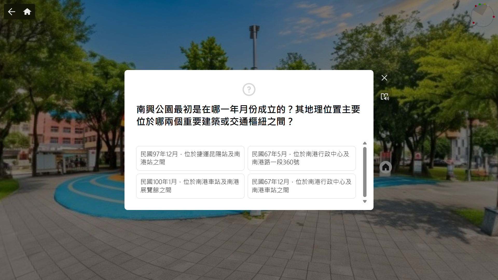
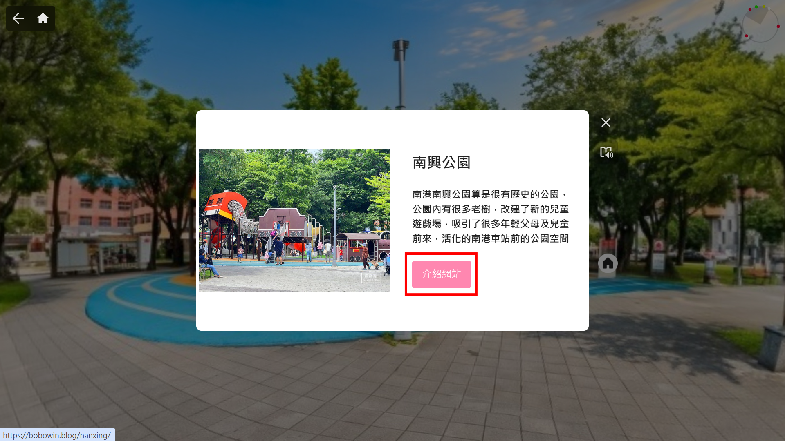

📖 作品簡介
《環遊世界 x 文化探索》是一款以 360 度 VR 虛擬實境技術打造的沉浸式數位自主學習教材。本專案打破傳統課本死板的單向教學模式，帶領學習者親臨世界各國知名歷史與文化景點，在虛擬旅遊的情境中探索地理地貌、深掘歷史故事並感受各國流行文化。
學習者在教材中不僅能走訪德國柏林圍牆、美國拉什莫爾山、印尼海神廟與智利復活節島等世界遺產，亦能踏入日本大阪環球影城及英國倫敦哈利波特影城等知名流行文化地標，落實「邊玩邊學、寓教於樂」的教學設計理念。
《環遊世界 x 文化探索》是一款以 360 度 VR 虛擬實境技術打造的沉浸式數位自主學習教材。本專案打破傳統課本死板的單向教學模式，帶領學習者親臨世界各國知名歷史與文化景點，在虛擬旅遊的情境中探索地理地貌、深掘歷史故事並感受各國流行文化。
學習者在教材中不僅能走訪德國柏林圍牆、美國拉什莫爾山、印尼海神廟與智利復活節島等世界遺產，亦能踏入日本大阪環球影城及英國倫敦哈利波特影城等知名流行文化地標，落實「邊玩邊學、寓教於樂」的教學設計理念。
本教材整合了自主導航、全景視角、互動測驗與彩蛋機制，各項核心亮點如下：

遊戲大廳中完整羅列世界各國地圖，並清楚標註國名。學習者可依據個人興趣自主點選想要探訪的地點，享受自由開放的探索旅程。

點擊各景點的資訊標籤即可展開詳細的歷史背景、地理景觀與文化故事解說，透過精簡圖文輔助學習者深化知識理解。

閱覽景點歷史背景後，即刻提供線上互動題目進行即時知識檢核，強化學習吸收度，並給予立即正向回饋以激發成就感。

針對各景點整合延伸閱讀與外部官方連結，提供具公信力的歷史或地理文獻資料，方便學習者在教材之外進行自主深入探討。